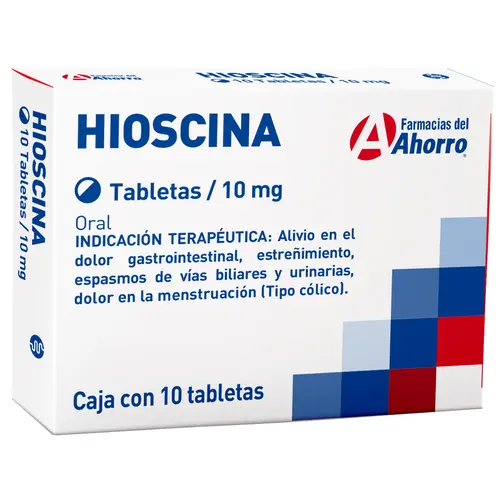
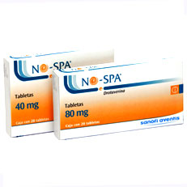
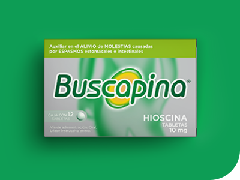

Bloquean los receptores muscarínicos (principalmente M3) del músculo liso en el tracto gastrointestinal, biliar y genitourinario, inhibiendo el efecto de la acetilcolina → disminuyen espasmos y motilidad.
Cólico intestinal, cólico biliar o renal, síndrome de intestino irritable, dismenorrea, espasmos vesicales, náuseas por vértigo (en el caso de escopolamina), espasmos gástricos o intestinales.
Glaucoma de ángulo cerrado, íleo paralítico, obstrucción intestinal, hipertrofia prostática severa, miastenia gravis, taquiarritmias, hipersensibilidad.
Butilhioscina (bromuro)
Escopolamina (hioscina)
Atropina
Boca seca, visión borrosa, taquicardia, estreñimiento, retención urinaria, confusión, somnolencia. En niños: riesgo de excitación/paradoja.
Potencian efecto con otros anticolinérgicos (antihistamínicos, antipsicóticos, antidepresivos tricíclicos), con opiáceos (riesgo de íleo), inhiben efecto de fármacos colinérgicos.